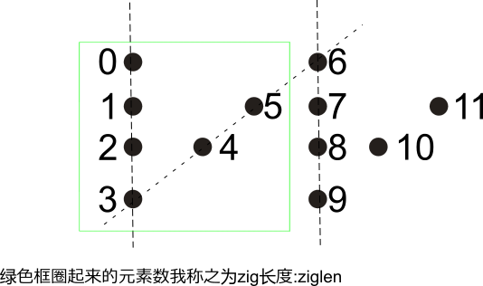

P A H N A P L S I I G Y I R那么按行读取,就得到"PAHNAPLSIIGYIR",那么返回"PAHNAPLSIIGYIR"即可.
#include <iostream> #include <string> #include <algorithm> #include <cmath> using namespace std; class Solution { public: string convert(string s, int numRows) { //如果行为1,则不需要转换 if(numRows == 1) return s; //返回字符串初始为空 string ss(""); //行数,字符串长度 int rows = numRows,len = s.length(); //zz的长度 zz的数目 int ziglen = rows + (rows - 2); int zigcnt = ceil(len * 1.0 / ziglen); for(int i = 0;i < rows;++i) { int p = i; //第一行和最后一行,只需缀一次 if(i == 0 || i == rows - 1) for(int j = 0;j < zigcnt && p < len; ++j) { ss += s[p]; p += ziglen; } //其他行则需缀两次 else for(int j = 0;j < zigcnt;++j) { if(p < len) ss += s[p]; //边界索引和ziglen * (2 * j + 1) if(ziglen * (2 * j + 1) - p < len) ss += s[ziglen * (2 * j + 1) - p]; p += ziglen; } } return ss; } }; //=======================Driver=========================== int main() { Solution sol; //cout<<sol.convert("PAYPALISHIRING", 3)<<endl; //cout<<sol.convert("", 1)<<endl; cout<<sol.convert("A", 2)<<endl; return 0; } /* ===========complexity============== Time Complexity:O(n)) Space Complexity:O(1) ===========makefile================= all: @g++ solve.cpp -o solve @./solve clean: rm -f solve reset ===========leetcode accepted======== 1158 / 1158 test cases passed. Status: Accepted Runtime: 16 ms Submitted: 0 minutes ago ===========submission date========= 2017-01-14 Sat 08:08 PM */
leetcode对这道题的评级是Easy,当然就是很Easy啦,确实很Easy啦.
这道题一个比较大的坎是意识到zigzag到底是什么形状,给出的样例case是三行,那么四行应该长什么样呢? 我想了一会儿,觉得zigzag应该是"正方形"这样的,这样画"之"字中间的斜线时,才有可能穿过元素点,还是看图:
然后就开始写代码了,代码AC了,验证了我的想法是正确的.
Easy到底Easy在哪里,我认为主要是Easy在它不那么难以理解,这题感觉就跟初三那些几何题目似的,有趣味,但是不难.
来说说代码实现,首先你先要计算出zig的长度,这里主要是为了找到一个循环部件,我就取上图绿色框里面的作为zigzag的zig长度:ziglen. 这个长度由给出的行数可以很容易计算出来有:ziglen=rows+(rows-2).然后是zigzag的数目,其数值等于字符串长度除以ziglen,结果向上取整.
一共rows行,那么需要循环rows次,依次提取出第一行,第二行,...,第rows行的元素.其中,第一行和第rows行,每个zig只需提取一个元素, 而第二行到第rows-1行,则每行需要提取两个元素.
在提取元素的过程中,需要知道要提取元素的索引,第一行和第rows行好处理,第二行到第rows-1行需要看出一个简单规律, 如上图所示的数字标号,代表对应元素点的索引值,可以发现1+5=2+4=6*1;7+11=8+10=6*3.很快的我们就可以得到索引为j处的zig块中, 索引为i的行,如果靠左侧的元素索引为p(这个是容易计算的),那么另一个元素的索引则为ziglen * (2 * j + 1) - p.
有两个地方容易出错,一个是计算zig的块数时,记得化为浮点型(具体地,可以乘以1.0)再计算.另一个是,注意边界检测.
至此,这个有趣的问题就完美的得到了解决.如果字符串长度为n,那么算法的时间复杂度为O(n),空间复杂度为O(1).